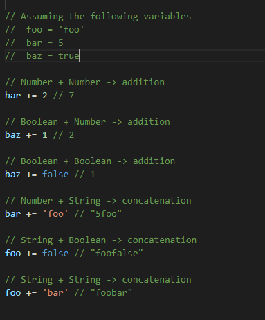
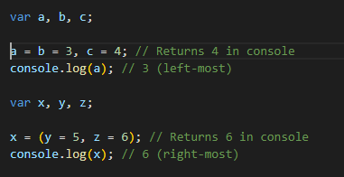
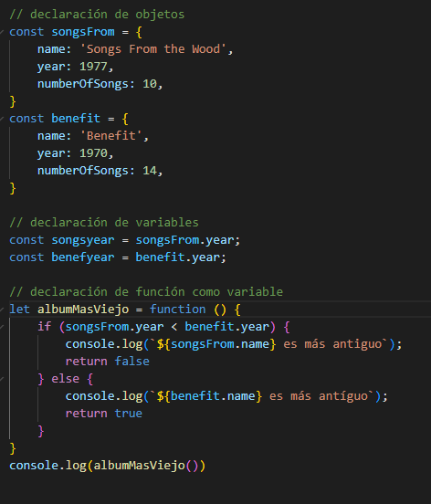
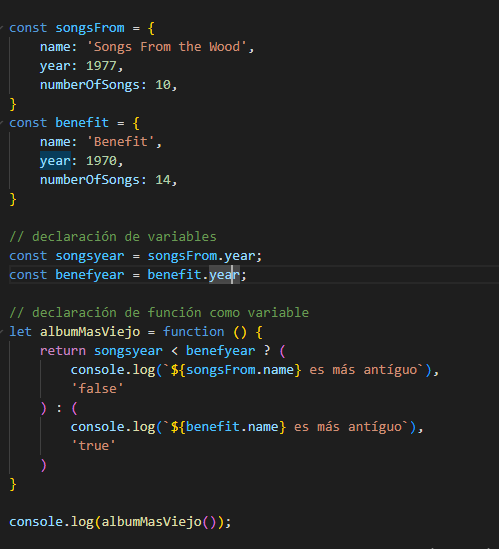
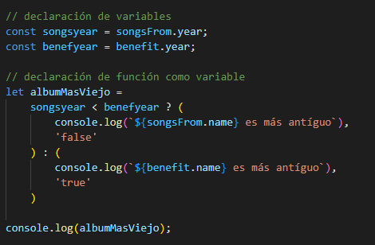
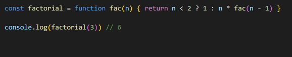

Apuntes Clases JavaScript - NUCBA - pag. 5
Operadores matematicos básicos:
- + (suma);
- - (resta);
- * (multiplica);
- / (divide);
- ** (Exponenciación)
- % (Remainder - devuelve el resto de una division).
- Built-in mathematical operators:
- += (suma o concatena y asigna el nuevo valor a la variable). Ej.: x += 1 es lo mismo que x = x+1. Interesante seguir el ejemplo abajo, para distintos tipos de valores, el operador sigue un comportamiento distinto:
- *= (Multiplica y asigna su nuevo valor);
- /= (divide una variable por un valor a la derecha y asigna a esta variable el nuevo valor);
- ++ (suma 1 al valor de la variable)
- -- (resta 1 al valor de la variable)

Operadores booleanos y de comparación:
- == (Igualdad)
- != (No igualdad)
- === (Igualdad estricta - indica que el coontenido y tipo de valor sean identicos)
- || (equivale al OR en lógica)
- && (equivale al AND en lógica)
- ! (Negación - puesto antes de una variable, es como decir "es falso que" y el resultado va a ser 'true' para lo que era falso y 'false' para lo que era true)
- <, <= (menor que y menor o igual que)
- >, >= (mayor que y mayor o igual que)

Otros operadores:
- , (comma en js - evalúa cada uno de sus operandos (de izquierda a derecha) y devuelve el valor del último operando. Esto le permite crear una expresión compuesta en la que se evalúan varias expresiones, siendo el valor final de la expresión compuesta el valor de la expresión más a la derecha de sus miembros. Esto se usa comúnmente para proporcionar múltiples parámetros a un ciclo for. Ej.:
- = (Asignaciones de valores)
Condicionales:
If else y if else if:
La forma de escribir de forma clásica la condicional if else es la siguiente:

Se podrá escribir de forma más compacta con el operador 'ternario'. Resumiendo, son simbolos que forman un syntaxis compacta y lógica.
Su forma es:
condición ? expr1 : expr2
En ternário, la condición viene sin el parenthesis, el interrogación '?' simboliza el if, las expresiones vienen sin los {} corchetes, y el ':' funciona como el else. De esta forma, el ejemplo anterior se escribiria así:


Otro ejemplo con el operador ternario.

Siguiente página - Funciones >>>>>>>>>>>>>>